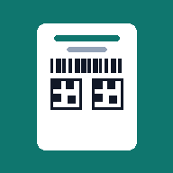

- 對準電子發票下方的兩個 QR Code，一次只把一個放進框內：先掃左側，再掃右側（品項不多時只掃左側就夠）。
- 掃描後會顯示電子發票模擬畫面，僅供個人記帳與留存參考，不得作為證明使用！可預覽並存成 JPG。
- 所有處理都在你的裝置上完成，不會上傳任何資料；需要允許相機權限。
- 只支援電子發票上的 QR Code。
- 不能代替電子發票證明聯正本，不得作為證明使用！！
長按（或右鍵）圖片也可以直接儲存

掃描發票 QR Code，顯示電子發票模擬畫面。
僅供個人記帳與留存參考，不得作為證明使用！
長按（或右鍵）圖片也可以直接儲存